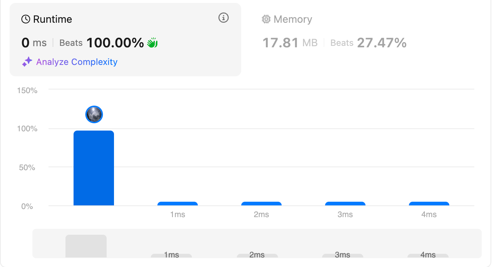
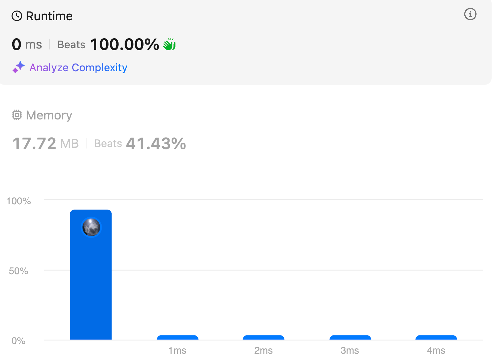

A Comprehensive Guide to Python Linked Lists and Cycle Detection
Linked lists are a foundational data structure used in computer science. They are made up of nodes where each node stores data and a reference (or pointer) to the next node. While Python’s built-in list type handles many dynamic array tasks, understanding how to implement and manipulate linked lists is crucial for mastering data structures and algorithms.
In this blog, we will explore:
-
Different types of linked lists (singly, doubly, and circular)
-
How to compare nodes for equality
-
Advanced linked list operations and algorithms
-
A detailed explanation and proof of Floyd’s cycle detection (fast and slow pointers) algorithm
1. Types of Linked Lists in Python
1.1 Singly Linked List
Concept: In a singly linked list, each node contains data and a pointer to the next node. This structure is great for scenarios where dynamic memory allocation is needed and where insertions and deletions are frequent.Python Implementation:
# Node class for singly linked list
class Node:
def __init__(self, data):
self.data = data # The data stored in the node
self.next = None # Pointer to the next node
# Singly linked list class with basic operations
class LinkedList:
def __init__(self):
self.head = None # Start with an empty list
# Append a node at the end
def append(self, data):
new_node = Node(data)
if not self.head:
self.head = new_node
return
current = self.head
while current.next:
current = current.next
current.next = new_node
# Display the linked list
def display(self):
current = self.head
while current:
print(current.data, end=" -> ")
current = current.next
print("None")
1.2 Doubly Linked List
Concept: A doubly linked list has nodes that contain a pointer to both the next node and the previous node. This bidirectional traversal is particularly useful for certain operations like deletion or reverse traversal.Python Implementation:
# Node class for doubly linked list
class DNode:
def __init__(self, data):
self.data = data
self.prev = None # Pointer to the previous node
self.next = None # Pointer to the next node
# Doubly linked list class with basic operations
class DoublyLinkedList:
def __init__(self):
self.head = None
# Append a node at the end
def append(self, data):
new_node = DNode(data)
if not self.head:
self.head = new_node
return
current = self.head
while current.next:
current = current.next
current.next = new_node
new_node.prev = current
# Display list from head to tail
def display_forward(self):
current = self.head
while current:
print(current.data, end=" <-> ")
current = current.next
print("None")
# Display list from tail to head
def display_backward(self):
current = self.head
if not current:
print("None")
return
while current.next:
current = current.next
while current:
print(current.data, end=" <-> ")
current = current.prev
print("None")
1.3 Circular Linked List
Concept: In a circular linked list, the last node points back to the head, forming a closed loop. This structure is useful in scenarios where you need to repeatedly loop through the list, such as in round-robin scheduling or the Josephus problem.Python Implementation:
# Node class (same as for singly linked list)
class Node:
def __init__(self, data):
self.data = data
self.next = None
# Circular linked list class
class CircularLinkedList:
def __init__(self):
self.head = None
# Append a node to the circular linked list
def append(self, data):
new_node = Node(data)
if not self.head:
self.head = new_node
new_node.next = self.head # Create the loop
else:
current = self.head
while current.next != self.head:
current = current.next
current.next = new_node
new_node.next = self.head
# Display the circular linked list
def display(self):
if not self.head:
print("None")
return
current = self.head
while True:
print(current.data, end=" -> ")
current = current.next
if current == self.head:
break
print("(Back to head)")
2. Comparing Two Nodes for Equality
When comparing two nodes, there are two main approaches:
2.1 Identity Comparison
By default, using == in Python compares the identity (memory address) of objects. This means that two different node instances with identical data will not be considered equal.
a = Node(10)
b = Node(10)
print(a == b) # Outputs: False, because they are different objects in memory.
2.2 Structural (Content) Comparison
To compare the content of two nodes (e.g., their stored data), you can override the __eq__ method. This way, if the data in both nodes is the same, they can be considered equal.
class Node:
def __init__(self, data):
self.data = data
self.next = None
def __eq__(self, other):
if not isinstance(other, Node):
return False
return self.data == other.data
a = Node(10)
b = Node(10)
print(a == b) # Outputs: True, because their data is equal.
3. Advanced Linked List Algorithms
Beyond basic operations, linked lists support a variety of advanced algorithms:
3.1 Reversing a Linked List
A common interview problem is to reverse a linked list by changing the direction of the pointers.
def reverse_linked_list(head):
prev = None
current = head
while current:
next_node = current.next # Save the next node
current.next = prev # Reverse the pointer
prev = current # Move prev to the current node
current = next_node # Proceed to the next node
return prev # New head of the reversed list
3.2 Cycle Detection with Floyd’s Algorithm
Floyd’s cycle detection algorithm uses two pointers—a slow pointer that moves one step at a time and a fast pointer that moves two steps. If there is a cycle, the two pointers will eventually meet.
def has_cycle(head):
slow = head
fast = head
while fast and fast.next:
slow = slow.next # Move slow pointer one step
fast = fast.next.next # Move fast pointer two steps
if slow == fast:
return True # Cycle detected
return False
3.3 Merging Two Sorted Linked Lists
Merging two sorted lists can be achieved using two pointers, comparing values and linking nodes in sorted order.
def merge_two_sorted_lists(l1, l2):
dummy = Node(0)
tail = dummy
while l1 and l2:
if l1.data < l2.data:
tail.next = l1
l1 = l1.next
else:
tail.next = l2
l2 = l2.next
tail = tail.next
tail.next = l1 if l1 else l2
return dummy.next
3.4 Finding the Middle Node
Using two pointers where one moves twice as fast as the other, you can efficiently locate the middle of a linked list.
def find_middle_node(head):
slow = head
fast = head
while fast and fast.next:
slow = slow.next
fast = fast.next.next
return slow # Slow pointer will be at the middle
4. Problems Easy
Leetcode 83. Remove Duplicates from Sorted List
class Solution:
def deleteDuplicates(self, head: Optional[ListNode]) -> Optional[ListNode]:
if not head:
return head
while head.next:
if head.val == head.next.val:
head.next = head.next.next
else:
head = head.next
return head
Leetcode 141: Linked List Cycle
Use slow and quick pointers
class Solution:
def hasCycle(self, head: Optional[ListNode]) -> bool:
slow, quick = head, head
while quick and quick.next:
slow = slow.next
quick = quick.next.next
if slow == quick:
return True
return False
Use set
class Solution:
def hasCycle(self, head: Optional[ListNode]) -> bool:
seen = set()
while head:
if head in seen:
return True
seen.add(head)
head = head.next
return False
Modify node
class Solution:
def hasCycle(self, head: Optional[ListNode]) -> bool:
curr = head
while curr:
if curr.val == 'visited':
return True
curr.val = 'visited'
curr = curr.next
return False
160. Intersection of Two Linked Lists
Given the heads of two singly linked-lists headA and headB, return the node at which the two lists intersect. If the two linked lists have no intersection at all, return null.
For example, the following two linked lists begin to intersect at node c1

The test cases are generated such that there are no cycles anywhere in the entire linked structure.
Note that the linked lists must retain their original structure after the function returns.
Example

- output: 8
Solution:
class Solution:
def getIntersectionNode(self, headA: ListNode, headB: ListNode) -> Optional[ListNode]:
curr_a, curr_b = headA, headB
while curr_a != curr_b:
curr_a = curr_a.next if curr_a else headB
curr_b = curr_b.next if curr_b else headA
return curr_a
Explanation: This two-pointer approach works by:
- Traversing both lists simultaneously
- When reaching the end of a list, continuing from the head of the other list
- Meeting at the intersection point after O(m + n) iterations
- Handling non-intersecting cases by eventually both pointing to null
Example: For two lists A → B → C → D and X → C → D (intersecting at C):
curr_a path: A → B → C → D → X → C curr_b path: X → C → D → A → B → C Both meet at C after 5 steps.
Complexity:
- Time: O(m + n) - Each pointer traverses both lists once.
- Space: O(1) - No additional data structures used.
203 Remove Linked List Elements
Problem: https://leetcode.com/problems/remove-linked-list-elements/description/
Example 1:

- Input: head = [1,2,6,3,4,5,6], val = 6
- Output: [1,2,3,4,5]
Example 2:
- Input: head = [], val = 1
- Output: []
Example 3:
- Input: head = [7,7,7,7], val = 7
- Output: []
Solution:
class Solution:
def removeElements(self, head: Optional[ListNode], val: int) -> Optional[ListNode]:
dummy = ListNode(0, head) # add a dummy head
prev, curr = dummy, head
while curr:
if curr.val == val:
prev.next = curr.next
else:
prev = curr
curr = curr.next
return dummy.next
Explanation:
- Dummy Head Pattern:
- Creates a temporary head node to handle edge cases where the real head needs removal
-
Eliminates special cases for empty lists or head node removal
-
Two-Pointer Technique:
prevtracks the last valid nodecurrexamines current node- When finding target value:
prev.nextskips overcurr -
Otherwise:
prevadvances normally -
Iteration Logic:
- Always advances
currto next node - Only advances
prevwhen keeping current node
Complexity:
- Time: O(n) - Single pass through all nodes
- Space: O(1) - Constant extra space for pointers
206 Reverse Linked List
Problem: https://leetcode.com/problems/reverse-linked-list/description/
Example 1:

- Input: head = [1,2,3,4,5]
- Output: [5,4,3,2,1]
Solution:
class Solution:
def reverseList(self, head: Optional[ListNode]) -> Optional[ListNode]:
dumpy_head =ListNode(0,None)
current = head
while current:
next_node = current.next
current.next = dumpy_head.next
dumpy_head.next = current
current = next_node
return dumpy_head.next
Explanation:
- Dummy Head Technique:
- Creates a temporary head to build the reversed list
-
Initial empty reversed list: dummy_head → None
-
Iterative Reversal Process:
- Preserve
next_nodebefore modifying links - Insert current node at front of reversed list:
current.nextpoints to previous reversed head- Update dummy_head's next to current node
-
Move to next node in original list
-
Visualization:
- Original: 1 → 2 → 3 → None
- After 1st iteration: dummy → 1 → None
- After 2nd: dummy → 2 → 1 → None
- Final: dummy → 3 → 2 → 1 → None
Complexity:
- Time: O(n) - Single pass through all nodes
- Space: O(1) - Constant extra space for pointers
234 Palindrome Linked List
Problem: https://leetcode.com/problems/palindrome-linked-list/description/
Given the head of a singly linked list, return true if it is a palindrome or false otherwise.
Example 1:

- Input: head = [1,2,2,1]
- Output: true
Example 2:

- Input: head = [1,2]
- Output: false
Solution:
class Solution:
def isPalindrome(self, head: Optional[ListNode]) -> bool:
"""use idea from reverse linked list"""
slow, fast = head, head
while fast and fast.next:
slow = slow.next
fast = fast.next.next
prev, curr = None, slow
while curr:
next_node = curr.next
curr.next = prev
prev = curr
curr = next_node
left, right = head, prev
while right:
if left.val != right.val:
return False
left = left.next
right = right.next
return True
Explanation:
- Midpoint Identification:
- Fast & slow pointers find middle (slow stops at n/2)
-
For odd lengths: slow skips center node (not compared)
-
Reverse Second Half:
- Reverse nodes starting from slow pointer
-
Creates reversed tail: e.g. 1→2→3→2→1 becomes 1→2→3←2←1
-
Two-Way Comparison:
leftstarts at head,rightstarts at reversed tail- Compare node values moving towards center
- Mismatch at any point → not palindrome
Complexity:
- Time: O(n) - Three sequential passes (find mid + reverse + compare)
- Space: O(1) - In-place reversal, no extra storage
705. Design HashSet
Problem
Design a HashSet without using any built-in hash table libraries.
Implement MyHashSet class:
void add(key) Inserts the value key into the HashSet. bool contains(key) Returns whether the value key exists in the HashSet or not. void remove(key) Removes the value key in the HashSet. If key does not exist in the HashSet, do nothing.
Solution:
class ListNode:
def __init__(self, val=-1, next=None):
self.val = val
self.next = next
class MyHashSet:
def __init__(self):
self.size = 1009 # Prime number for better hash distribution
self.buckets = [ListNode() for _ in range(self.size)]
def _hash(self, key: int) -> int:
return key % self.size
def add(self, key: int) -> None:
h = self._hash(key)
curr = self.buckets[h]
while curr.next:
if curr.next.val == key:
return # Key already exists
curr = curr.next
curr.next = ListNode(key)
def remove(self, key: int) -> None:
h = self._hash(key)
curr = self.buckets[h]
while curr.next:
if curr.next.val == key:
curr.next = curr.next.next
return
curr = curr.next
def contains(self, key: int) -> bool:
h = self._hash(key)
curr = self.buckets[h].next
while curr:
if curr.val == key:
return True
curr = curr.next
return False
Explanation:
- Hash Function & Buckets:
- Uses a prime number (1009) of buckets to reduce collisions
-
key % sizedistributes keys across buckets -
Add Operation:
- Finds bucket using hash function
- Checks for existing key in linked list
-
Appends new node if key doesn't exist
-
Remove Operation:
- Traverses bucket's linked list
-
Removes node by bypassing its reference
-
Contains Check:
- Searches only within the relevant bucket
- Returns True immediately upon finding key
Complexity:
- Average Case: O(1) for all operations
- Worst Case: O(n) (all keys collide)
- Space: O(n + buckets)
706. Design HashMap
● Easy
Design a HashMap without using any built-in hash table libraries.
Implement the MyHashMap class:
- MyHashMap() initializes the object with an empty map.
- void put(int key, int value) inserts a (key, value) pair into the HashMap. If the key already exists in the map, update the corresponding value.
- int get(int key) returns the value to which the specified key is mapped, or -1 if this map contains no mapping for the key.
- void remove(key) removes the key and its corresponding value if the map contains the mapping for the key.
class ListNode:
def __init__(self, key=-1, value=-1, next=None):
self.key = key
self.value = value
self.next = next
class MyHashMap:
def __init__(self):
self.size = 1009
self.buckets = [ListNode() for _ in range(self.size)]
def _hash(self, key: int) -> int:
return key % self.size
def put(self, key: int, value: int) -> None:
h = self._hash(key)
curr = self.buckets[h]
while curr.next:
if curr.next.key == key:
curr.next.value = value
return
curr = curr.next
curr.next = ListNode(key, value)
def get(self, key: int) -> int:
h = self._hash(key)
curr = self.buckets[h].next
while curr:
if curr.key == key:
return curr.value
curr = curr.next
return -1
def remove(self, key: int) -> None:
h = self._hash(key)
curr = self.buckets[h]
while curr.next:
if curr.next.key == key:
curr.next = curr.next.next
return
curr = curr.next
Explanation of the HashMap Implementation:
- Core Components:
- Buckets: 1009 linked lists (prime number reduces collisions)
- Hash Function: Simple modulo operation (key % size)
- ListNode: Stores key-value pairs and next pointer
- Key Operations:
- Put: Finds bucket via hash Updates value if key exists Appends new node if key is new
- Get: Searches bucket's linked list Returns -1 if not found
- Remove: Uses dummy head for safe deletion Bypasses target node's reference Complexity Analysis:
- Time:
- Average: O(1) with good hash distribution
- Worst: O(n) (all keys collide)
- Space: O(n + buckets)
Comparison with Built-in Hash Tables:
| Feature | This Implementation | Python dict |
|---|---|---|
| Collision Handling | Linked List Chaining | Open Addressing |
| Load Factor Control | Fixed Size | Dynamic Resizing |
| Hash Function | Simple Modulo | Complex (CPython) |
| Memory Overhead | Higher (Nodes + Links) | Lower (Dense Array) |
| Worst-Case Lookup | O(n) | O(1) |
| Built-in Methods | Limited (put/get/remove) | Extensive |
| Performance (Average) | ~3x slower | Optimized C Code |
876. Middle of the Linked List
Problem: https://leetcode.com/problems/middle-of-the-linked-list/
Given the head of a singly linked list, return the middle node. If there are two middle nodes, return the second one.
Solution Code:
class Solution:
def middleNode(self, head: Optional[ListNode]) -> Optional[ListNode]:
slow = fast = head
while fast and fast.next:
slow = slow.next
fast = fast.next.next
return slow

Explanation:
-
Two-Pointer Technique (Tortoise & Hare):
-
Initialize slow and fast pointers at head
- Move slow by 1 node, fast by 2 nodes per iteration
-
When fast reaches end, slow points to middle
-
Edge Cases:
-
Single node: Returns head directly
-
Even nodes: Returns second middle (e.g., 4 in 1→2→3→4→5→6)
-
Complexity Analysis:
-
Time: O(n) - Single traversal
- Space: O(1) - Constant pointer variables
Example Walkthrough:
- Input: 1 → 2 → 3 → 4 → 5
- Step 1: slow=1, fast=1
- Step 2: slow=2, fast=3
- Step 3: slow=3, fast=5
- (fast.next=None → stop)
- Output: Node with value 3
- Input: 1 → 2 → 3 → 4 → 5 → 6
- Step 1: slow=1, fast=1
- Step 2: slow=2, fast=3
- Step 3: slow=3, fast=5
- Step 4: slow=4, fast=None (exit loop)
- Output: Node with value 4
1290 Convert Binary Number in a Linked List to Integer
https://leetcode.com/problems/convert-binary-number-in-a-linked-list-to-integer/description/
Given head which is a reference node to a singly-linked list. The value of each node in the linked list is either 0 or 1. The linked list holds the binary representation of a number.
Return the decimal value of the number in the linked list.
The most significant bit is at the head of the linked list.
Example

- Input: head = [1,0,1]
- Output: 5
- Explanation: (101) in base 2 = (5) in base 10
Solution
def getDecimalValue(self, head: Optional[ListNode]) -> int:
current = head
rst = 0
while current:
rst = 2*rst+current.val
current = current.next
return rst

Explanation:
- Initialization:
currentpointer starts at the head of the list-
rst(result) is initialized to 0 -
Traversal and Conversion:
- Traverse each node in the linked list
- For each node, update
rstusing the formula:rst = 2 * rst + current.val- This effectively shifts
rstleft by one bit (multiplying by 2) and adds the current node's value
- This effectively shifts
-
Move
currentto the next node -
Final Result:
- Once traversal is complete,
rstcontains the decimal value of the binary number
Example:
- For input list
1 → 0 → 1: - Step 1:
rst = 0,current.val = 1→rst = 2*0 + 1 = 1 - Step 2:
rst = 1,current.val = 0→rst = 2*1 + 0 = 2 - Step 3:
rst = 2,current.val = 1→rst = 2*2 + 1 = 5 - Output:
5(binary101to decimal)
Complexity:
- Time: O(n) - Single pass through the list
- Space: O(1) - Constant space usage